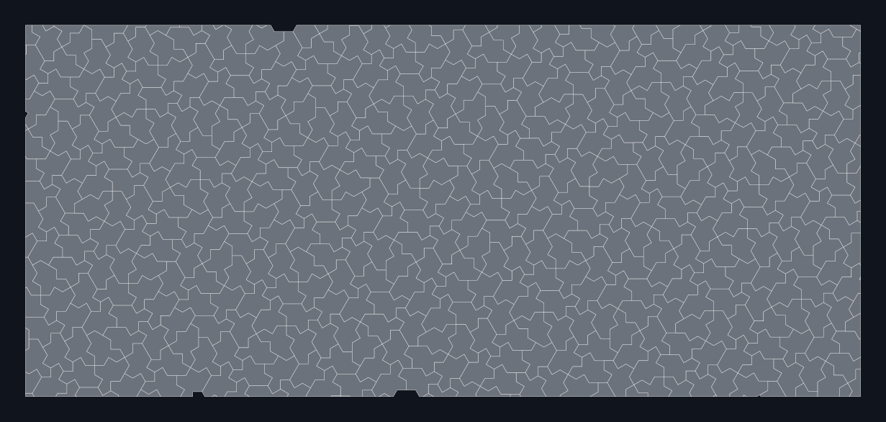

Materials science and fluids
Metamaterials, lattices, electrodes, exchangers, and porous media candidates.
Geometry as a material parameter
Engineers tune performance by changing geometry: pores, channels, lattices, electrodes, exchangers, and support structures. Periodic geometries bring resonances and preferred failure planes; random geometries bring variance and poor reproducibility. Aperiodic monotile arrays give a controlled middle path — deterministic, manufacturable from a single element, and provably free of translational symmetry.[2]

The evidence that this matters physically is accumulating: distinct electronic and vibrational spectra on the Hat lattice,[20] modified phase behavior for spins,[21] distinctive dimer combinatorics,[22] and measured chiral optical response.[19] Related lattice families from Sturmian systems[13] and iterated function systems[14] extend the design space beyond the monotile itself.
Mechanical evidence is now substantial. Printed Hat honeycombs achieve isotropic zero Poisson’s ratio,[42] converge toward isotropic continuum elasticity,[43] and allow independent tuning of modulus and Poisson ratio across Hat-family variants.[44] Comparative studies map effective properties across Hat, Turtle, and Spectre lattices.[45] In composites, aperiodic monotile reinforcements outperform tested honeycomb controls in stiffness, strength, and toughness,[46] with follow-on work using machine learning to explore the family[47] and multi-phase curvature engineering.[48] Interlocking aperiodic assemblies show dramatic fracture-resistance gains over periodic honeycombs.[49] TPMS cells patterned on Hat, Turtle, and Spectre tilings offer another design axis for thin-walled metamaterials,[60] and phase-field studies explore polycrystalline evolution on Hat-family meshes.[61]
Several papers label new lattices “einstein monotile” while using geometry inspired by rather than identical to Smith’s Hat or Spectre — see refs. [62] and [64]–[65]. Always verify whether a source uses canonical tile outlines or a derivative mesh.
Directions
- Metamaterials, auxetic lattices, acoustic cloaking, and programmable matter
- Battery electrodes, fuel cells, solar concentrators, thermal exchangers, and porous media
- Crack-arrest and impact structures: no periodic cleavage planes for failures to follow
- Drag reduction, turbulence control, microfluidics, and surface texturing
See also
Materials and fabrication, Waves, acoustics, and photonics
Categories: Research frontiers